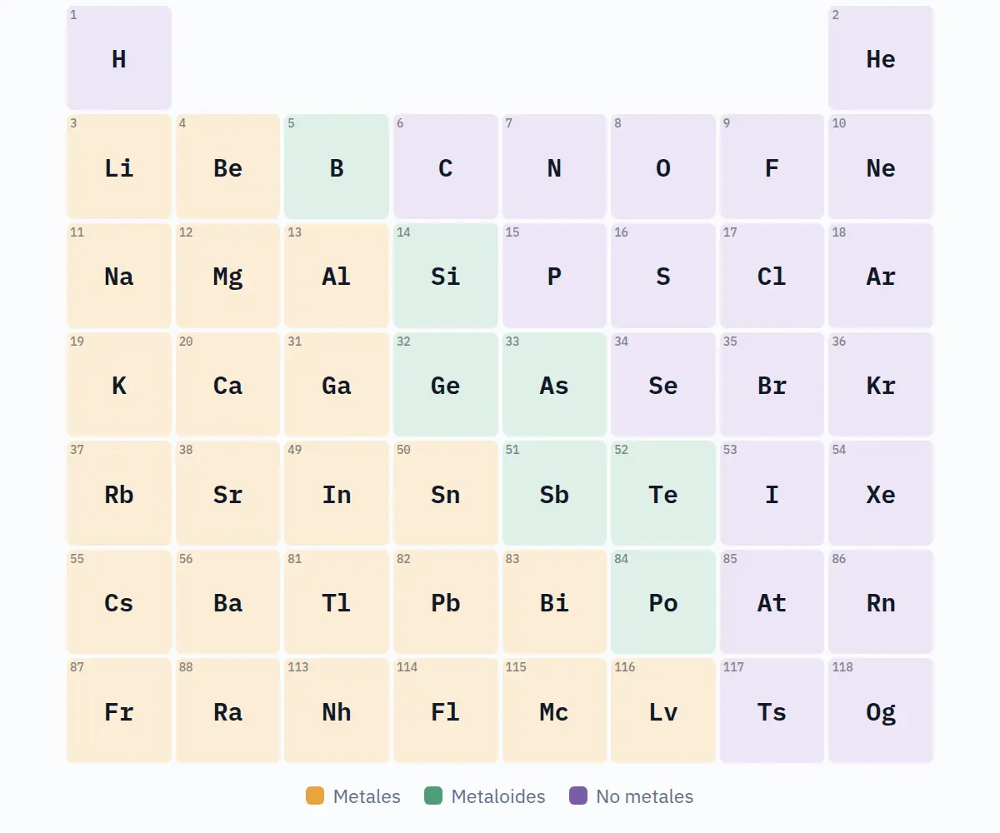

Tabla periódica reactiva
Imán y Escudo
en uso en clases
- Para
- Química, 8.º básico (CN08 OA14), guía N.º 3.
- Entrena
- Tendencias periódicas por posición, sin memorizar valores: radio atómico, energía de ionización, electronegatividad y tipo de enlace.
- Modos
- Comparación guiada, práctica con pistas graduales y modo docente para proyectar los casos de la guía.
- Datos
- Trabaja sólo en el navegador.